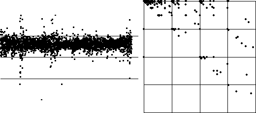

|  |
| Better is to look at, for example, the one-step differences of the data. |
| These pictures are the differences (left) with equal-size bins, and (right) the IFS driven by this sequence with these bins. |
| Question: three differences lie in bin 1. Shouldn't there then be three IFS points in the square with address1? |
| Hint: can you tell in which bin the points immediately preceding those in bin 1 lie? |
Return to Sample